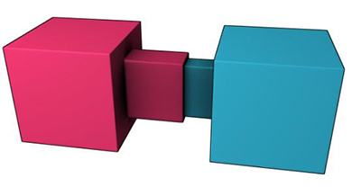
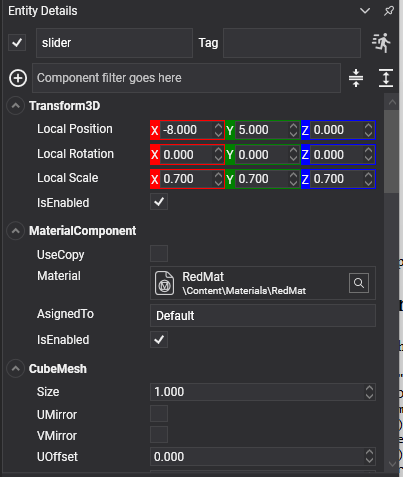

Slider Constraint
A slider constraint lets a body move along one axis and nothing else: no other translation and no rotation at all. Pistons, drawers, lifts on rails, sliding doors.

It is the linear mirror of the hinge: the same limits, friction and motors, measured in metres and newtons instead of radians and newton-metres.
SliderConstraint Component

Entity drawer = new Entity("drawer")
.AddComponent(new Transform3D() { Position = new Vector3(0f, 1f, 0f) })
.AddComponent(new MaterialComponent() { Material = material })
.AddComponent(new CubeMesh())
.AddComponent(new MeshRenderer())
.AddComponent(new RigidBody() { Mass = 8f })
.AddComponent(new BoxCollider() { Size = new Vector3(0.8f, 0.3f, 1f) })
.AddComponent(new SliderConstraint()
{
ConnectedEntityPath = "cabinet",
Axis = Vector3.UnitZ,
NormalAxis = Vector3.UnitY,
MinDistance = 0f, // Shut...
MaxDistance = 0.8f, // ...to fully out.
MaxFrictionForce = 12f, // Stays where it is left.
});
this.Managers.EntityManager.Add(drawer);
Axis Properties
| Property | Default | Description |
|---|---|---|
| Axis | 1,0,0 | The direction the body may slide along, in its local space. |
| NormalAxis | 0,1,0 | A reference direction perpendicular to Axis, used to fix the orientation. |
Limit Properties
| Property | Default | Description |
|---|---|---|
| MinDistance | -1 | How far the body may travel backwards along the axis, in metres, measured from where the constraint was created. |
| MaxDistance | 1 | How far forwards. |
| LimitsSpring | hard | Makes the limits soft, which turns the slider into a suspension strut. See Springs. |
| MaxFrictionForce | 0 | Friction along the axis, in newtons. Without it a vertical slider falls to its bottom limit and a horizontal one never stops. |
| CurrentPosition | read-only | Where along the axis the body is right now, in metres. |
Motor Properties
| Property | Default | Description |
|---|---|---|
| MotorMode | Off |
Velocity drives towards TargetVelocity; Position drives towards TargetPosition and holds there. |
| TargetVelocity | 0 | The speed the velocity motor aims for, in metres per second. |
| TargetPosition | 0 | The place the position motor aims for, in metres along the axis. |
| MaxMotorForce | 1000 | The strongest force the motor may apply. |
Plus the common properties.
Using Slider Constraint
A hydraulic piston
public class Piston : Behavior
{
[BindComponent]
private SliderConstraint slider = null;
public float Period { get; set; } = 3f;
public float Stroke { get; set; } = 1.2f;
private float elapsed;
protected override void Start()
{
this.slider.MotorMode = MotorMode.Position;
this.slider.MaxMotorForce = 4000f;
}
protected override void Update(TimeSpan gameTime)
{
this.elapsed += (float)gameTime.TotalSeconds;
// The motor is asked for a place and finds its own way there, so whatever is in the piston's
// path is pushed with up to MaxMotorForce and no more. Driving the transform instead would
// shove everything aside regardless of mass.
this.slider.TargetPosition = (float)Math.Sin(this.elapsed * MathHelper.TwoPi / this.Period) * this.Stroke;
}
}
A suspension strut
slider.Axis = Vector3.Up;
slider.MinDistance = -0.25f;
slider.MaxDistance = 0.05f;
// Soft limits rather than hard: the strut compresses under load and pushes back, instead of the
// body simply stopping dead when it reaches the bottom of its travel.
slider.LimitsSpring = SpringParameters.FromFrequency(2.5f, 0.5f);
Note
A slider's values are expressed from the point of view of the body carrying the component. A positive TargetPosition moves this body along its own Axis, whichever of the two bodies happens to be the heavier.
Tip
For a lift that should travel a fixed path and carry whatever stands on it, a kinematic body driven with MoveTo is simpler than a motorised slider. See Rigid Body. Use a slider when the lift should be stoppable, should sag under load, or should be pushed by something else.